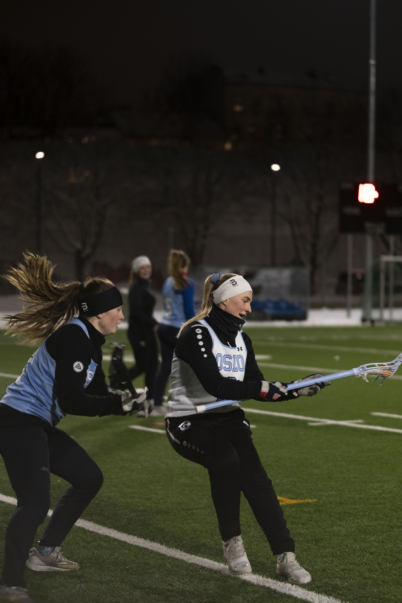

Hva er lacrosse?

Lacrosse er en idrett med lang og stolt historie, helt tilbake til 1600-tallet. Dens opphav var som et spill mellom ulike grupper av urfolk i Nord Amerika og idrettens seremonier er fremdeles preget av deres rike tradisjoner. Idretten er en lagbasert ballsport som spilles med ti spillere på hvert lag, på en bane omtrent av samme størrelse som en vanlig fotballbane. Det finnes også innendørs lacrosse, kalt indoor eller box lacrosse. Spillerne er utstyrt med køller med en nettlomme i enden som brukes til å fange og kaste ballen mellom spillerne og i mål. Taktisk minner spillet mye om ishockey, hvor du har et offensivt spill som handler om å sette opp spill og skaffe medspillere åpne skudd. Lacrosse i Norge har i dag ca. 1.000 aktive spillere i forbundets 16 medlemsklubber. Klubbene er i stor grad tilknyttet universitet og høyskoler, men det er også frittstående klubber.